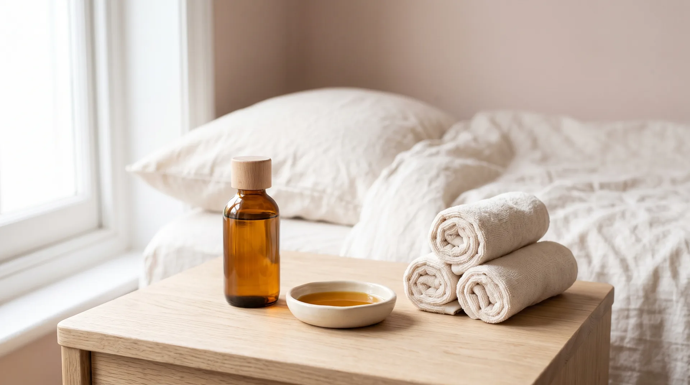

Lymphatic

Hot Stone

Confinement

Full Body
All four use your real treatment photographs, the brand palette and the two type faces already on the page. Click any closed panel to open it. Nothing here is wired into the live page.
Label option one
Three of your four real names contain the word "Massage", so as closed labels they read as duplicates. Here each closed panel carries the one word that makes it different: Lymphatic, Hot Stone, Confinement, Full Body. The full formal name appears once you open it. Open-panel style: overlay on the photograph.

Label option two
Closed panels grow from about 84px to about 168px, enough for the real name to wrap onto two lines at a small size. The photograph gives up real width to buy this room. Open-panel style: split, photograph and copy side by side.
Gentle lymphatic drainage, abdominal warming and muscular restoration for early recovery.
Restorative bodywork with heated stones, easing nursing tension and lower back strain.
Our signature trio: postpartum massage, hot stone therapy, and bespoke Bengkung belly binding.
Whole-body massage for muscular release and rest. Open to partners and family.
Label option three
Panel width stays tight, matching option one, but each closed panel carries a solid ground band at the foot deep enough for the real name across two or three lines. This is closest to what your current concertina already does, moved into the horizontal frame. Open-panel style: overlay on the photograph.
End of the options. Tell me which labelling approach and which open-panel treatment to combine, or which parts to mix.